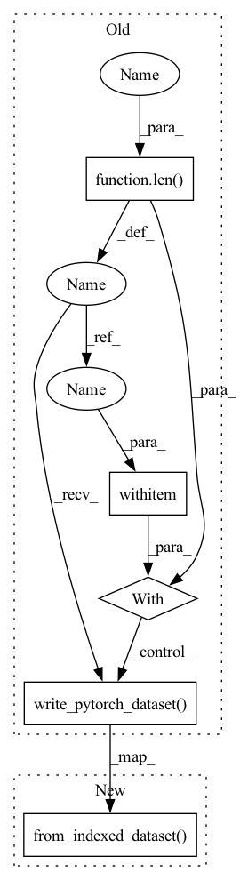

Pattern ID :8906

Before Change
with NamedTemporaryFile() as handle:
name = handle.name
writer = DatasetWriter(len(my_dataset), name, {
"image": RGBImageField(write_mode="smart",
max_resolution=32),
"label": IntField(),
})
with writer:
writer.write_pytorch_dataset(my_dataset, num_workers=2, chunksize=10)
Compiler.set_enabled(True)
loader = Loader(name, batch_size=5, num_workers=2, pipelines={
After Change
"label": IntField(),
}, num_workers=2)
writer.from_indexed_dataset(my_dataset, chunksize=10)
Compiler.set_enabled(True)
loader = Loader(name, batch_size=5, num_workers=2, pipelines={
In pattern: SUPERPATTERN
Frequency: 3
Non-data size: 5
Instances
Fragment ID: 32715975
Project Name: libffcv/ffcv
Commit Name: 7c5bd3afabdbbe44ce6ffea4a9bdfafcf9435e51
Time: 2021-12-06
Author: leclerc@mit.edu
File Name: tests/test_augmentations.py
M Class Name: AnonimousClass
N Class Name: AnonimousClass
M Method Name: run_test(3)
N Method Name: run_test(3)
M Parent Class:
N Parent Class:
M File Name: tests/test_augmentations.py
N File Name: tests/test_augmentations.py
M Start Line: 19
M End Line: 32
N Start Line: 29
N End Line: 29
'>
Before Change
if subset > 0: my_dataset = Subset(my_dataset, range(subset))
writer = DatasetWriter(len(my_dataset), write_path, {
"image": RGBImageField(write_mode=write_mode,
max_resolution=max_resolution,
compress_probability=0.,
jpeg_quality=jpeg_quality),
"label": IntField(),
})
with writer:
writer.write_pytorch_dataset(my_dataset, num_workers=num_workers, chunksize=chunk_size)
if __name__ == "__main__":
config = get_current_config()
parser = ArgumentParser(description="Fast imagenet training")
After Change
"label": IntField(),
}, num_workers=num_workers)
writer.from_indexed_dataset(my_dataset, chunksize=chunk_size)
if __name__ == "__main__":
config = get_current_config()
parser = ArgumentParser(description="Fast imagenet training")
'>
Fragment ID: 32715974
Project Name: libffcv/ffcv
Commit Name: e9476aa157d0e36f019db1f7c97f5a74e79d2fa2
Time: 2021-12-30
Author: engstrom@csail.mit.edu
File Name: scripts/write_image_datasets.py
M Class Name: AnonimousClass
N Class Name: AnonimousClass
M Method Name: main(11)
N Method Name: main(10)
M Parent Class:
N Parent Class:
M File Name: scripts/write_image_datasets.py
N File Name: scripts/write_image_datasets.py
M Start Line: 48
M End Line: 58
N Start Line: 41
N End Line: 58
'>
Before Change
assert_that(ch.all((image == (i % 255)).reshape(-1))).is_true()
def make_and_read_cifar_subset(length):
my_dataset = Subset(CIFAR10(root="/tmp", train=True, download=True), range(length))
with NamedTemporaryFile() as handle:
name = handle.name
writer = DatasetWriter(len(my_dataset), name, {
"image": RGBImageField(write_mode="smart",
max_resolution=32),
"label": IntField(),
})
with writer:
writer.write_pytorch_dataset(my_dataset, num_workers=2, chunksize=10)
Compiler.set_enabled(False)
loader = Loader(name, batch_size=5, num_workers=2)
After Change
"label": IntField(),
}, num_workers=2)
writer.from_indexed_dataset(my_dataset, chunksize=10)
Compiler.set_enabled(False)
loader = Loader(name, batch_size=5, num_workers=2)
'>
Fragment ID: 32715976
Project Name: libffcv/ffcv
Commit Name: 7c5bd3afabdbbe44ce6ffea4a9bdfafcf9435e51
Time: 2021-12-06
Author: leclerc@mit.edu
File Name: tests/test_image_pipeline.py
M Class Name: AnonimousClass
N Class Name: AnonimousClass
M Method Name: make_and_read_cifar_subset(1)
N Method Name: make_and_read_cifar_subset(1)
M Parent Class:
N Parent Class:
M File Name: tests/test_image_pipeline.py
N File Name: tests/test_image_pipeline.py
M Start Line: 75
M End Line: 88
N Start Line: 84
N End Line: 84